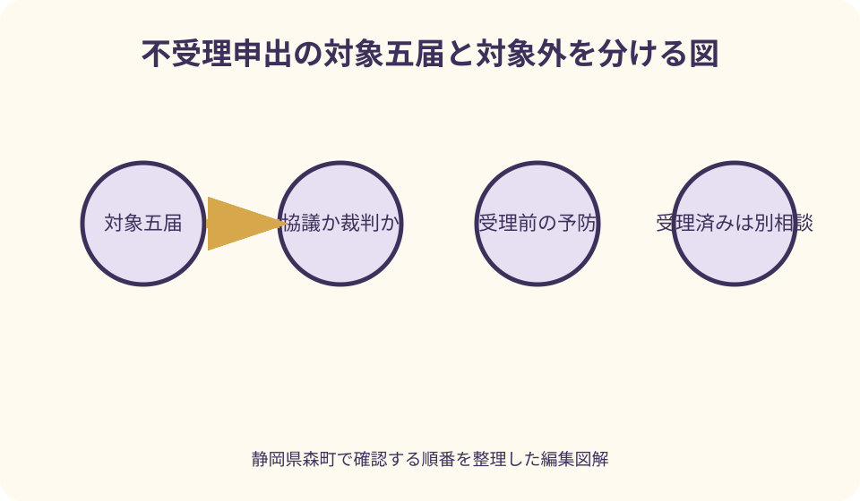
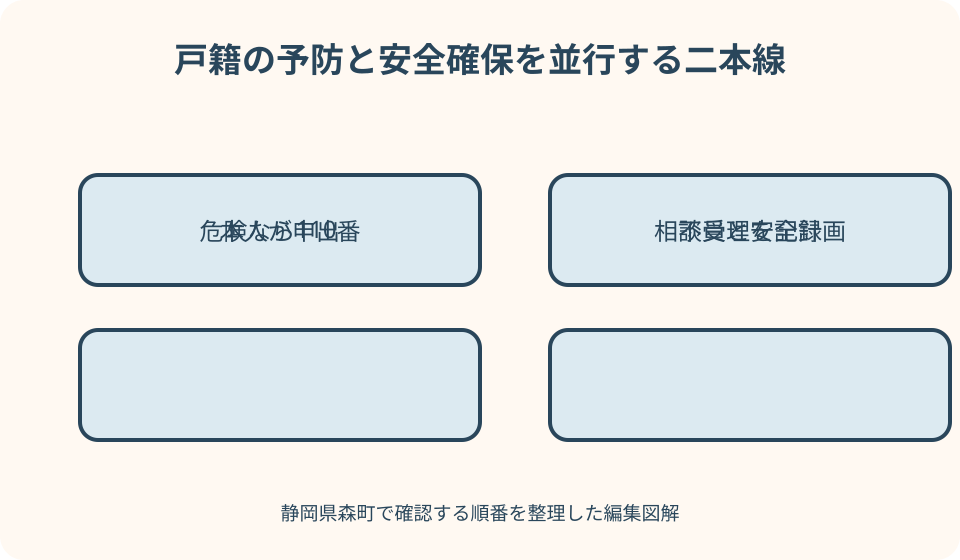

行政手続・証明書｜最終確認 2026-08-10
静岡県森町の戸籍届不受理申出｜対象・本人確認・取下げを整理
戸籍届の不受理申出は、本人の意思に基づかない婚姻や協議離婚などの届出が受理されるのを防ぐための制度です。ただし、対象となる届出は限られ、すでに受理された届出を元に戻す手続でも、相手との接触を止める制度でもありません。静岡県森町の窓口案内と法務省の一次情報を基に、急ぐべき場面、本人確認、取下げ、安全相談を分けて説明します。

編集イラスト不受理申出は意思のない戸籍届を未然に止める制度
不受理申出を一言で表すと、自分が窓口へ出向いたと確認できない状態で、本人の意思に基づかない一定の戸籍届が提出されたときに受理しないよう、あらかじめ市区町村へ申し出る制度です。相手との話合いが終わるまで届書を保管してもらう制度ではなく、本人の届出意思を守る仕組みとして理解します。
森町公式の「戸籍・住民異動に関する届出」は、不受理申出とその取下げを戸籍届出の一つとして挙げ、住民生活課窓口で本人確認を行うと案内しています。検索結果だけで済ませず、実行日に更新日、窓口、本人確認書類を開いてから出向いてください。
法務省は対象を、婚姻届、協議離婚届、養子縁組届、協議離縁届、任意認知届と示しています。出生届や死亡届、転籍届など全ての戸籍届を一括して止めるものではありません。心配している届書の正式名称を窓口へ伝えることが必要です。
裁判や審判に基づく離婚・離縁・認知は、当事者が共同で意思を示す通常の協議届とは性質が異なり、不受理申出の対象外と法務省資料に示されています。現在の手続が協議なのか裁判所を通じたものなのか分からない場合は、相手の説明だけで判断せず戸籍窓口へ確認します。
まず対象届と自分の立場を組み合わせる
婚姻届を心配する場合は、婚姻の当事者となる本人が自分について申し出ます。親やきょうだいが、成人した本人の意思を推測して代わりに申し出る制度だと考えないことが大切です。本人が窓口へ行けない事情があるときは、代理できると決めつけず森町住民係へ相談します。
協議離婚届では夫または妻が申出人となります。過去に署名した離婚届を相手が持っている、口論の勢いで届書を渡したが今は離婚意思がない、といった場面でも、届書の所在を探すことだけに時間を使わず、提出される前に窓口へ相談する判断が重要です。
養子縁組・協議離縁は、養親側と養子側のどちらで申し出るか、年齢や法定代理人の扱いを含めて個別確認が必要です。家族が財産や氏の変更を目的に届出を急いでいる場合でも、記事の一般例で申出人を確定せず、戸籍上の関係と本人年齢を住民係へ伝えます。
任意認知届について法務省資料は、認知する父を申出できる人として示しています。認知される子や母が同じ方法で申し出られると読み替えないでください。親子関係に関する差し迫った事情は、戸籍窓口だけでなく法律相談へつなぐ必要があります。
すでに受理された疑いがあるときは別の対応へ切り替える
不受理申出は、これから提出される意思のない届出を防ぐための仕組みです。すでに届出が受理され、戸籍へ記載された事実を申出だけで消すものではありません。「昨日出したと言われた」「氏が変わった通知が届いた」など受理済みの疑いがあれば、その点を最初に森町住民係へ伝えます。
受理の有無を確かめたいときは、誰でも自由に届書を閲覧できるわけではありません。森町公式は戸籍届受理証明書を証明の種類として案内していますが、請求できる人、請求先、目的、本人確認には条件があります。自分の事情でどの証明が使えるかを窓口へ相談します。
受理済みで意思のない届出だった場合、戸籍訂正や身分関係を争う手続には法律上の判断が関わります。相手に訂正を頼めば済むと考えず、戸籍窓口から案内を受け、必要に応じて家庭裁判所、弁護士、法テラスなど適切な相談先へ早くつなぎます。
反対に、まだ提出されていないと確認できなくても、具体的な心配があるなら相談を後回しにしないでください。相手へ届書の有無を尋ねることで危険が高まる関係もあります。不受理申出の相談と安全確保を同時に進めることが現実的です。

森町の窓口へ伝える五つの事実
電話や窓口では、第一に心配している届出の種類を伝えます。「戸籍を止めたい」だけでは、婚姻、離婚、縁組、離縁、認知のどれかが分かりません。正式名称が不明なら、誰と誰のどの身分関係が変わる届出かを説明します。
第二に、自分の氏名、生年月日、本籍、住所を確認します。本籍と住所を混同すると申出先の案内を受けにくくなります。分からない本籍を推測して書かず、住民票や手元の戸籍資料で確認する方法を住民係へ尋ねます。
第三に、相手方を特定できる情報を手元で整理します。婚姻や離婚の相手、縁組関係の相手など、対象届ごとに必要となる範囲が異なります。相手の個人情報をメールや共有端末へ不用意に保存せず、窓口で何を記載するか確認します。
第四に、すでに届出が提出された可能性、第五に、暴力や脅迫による危険の有無を伝えます。この二点で、単なる申出準備ではなく、受理確認や安全相談を急ぐ必要が見えます。申出の事情を長く説明するより、現在の危険と時間関係を先に共有します。
原則本人が窓口へ出向く理由を理解する
法務省の案内は、不受理申出書を原則として申出人本人が窓口で提出するとしています。これは、本人の意思に反する届出を防ぐ制度だからこそ、申出自体が本人の意思であることを直接確認するためです。家族が委任状を持てば通常どおり代行できるとは限りません。
森町公式も、不受理申出と取下げを本人確認が必要な戸籍届出に含め、住民生活課窓口で行うよう案内しています。窓口へ行く人の本人確認ではなく、申出人本人が来庁できるかが重要なため、仕事の都合だけで家族へ任せる前に住民係へ確認します。
病気、身体の状態、施設入所など本人出頭が難しい事情があるときは、申出を諦めたり独自の代理書面を作ったりせず、その事情を具体的に伝えます。特例的な扱いの可否や必要資料は個別判断になるため、診断書が必ず必要などと記事だけで断定しません。
森町外へ避難している人は、安全のために森町へ戻ることを前提にしないでください。法務省資料は本籍地のほか住所地・所在地の市区町村役場も窓口として示しています。現在いる場所の自治体へ相談できるかを確認し、移動経路を相手へ知られる危険を避けます。
本人確認書類は不受理申出用として事前確認する
法務省の案内は、運転免許証やマイナンバーカードなど顔写真付きの本人確認書類を例示しています。森町の一般的な戸籍届案内には写真付き一種類または写真なし二種類という区分もありますが、不受理申出で使える組合せは実行前に住民係へ確認するのが安全です。
書類の有効期限、現在の氏名・住所と表示が一致しているかも確認します。避難中で住民票と居所が違う場合や、改姓前の資料しかない場合は、自分で修正せず現在の状況を窓口へ説明してください。追加資料が必要かを先に聞けば無用な往復を減らせます。
マイナンバーカードを持ち出すと危険な状況では、カード取得のために相手のいる家へ戻らないでください。手元にある本人確認資料の名称を安全な場所から住民係へ伝え、代替方法を確認します。身の危険が迫るときは書類準備より110番を優先します。
申出書は市区町村窓口で配布されると法務省が案内しています。インターネットで見つけた他自治体の古い様式へ先に署名せず、森町または現在地の受付窓口が使う様式を確認します。申出対象、相手方、本人情報の書き誤りを窓口で防ぐためです。
申出の効力と自分で届出したいときの扱い
法務省の最新リーフレットは、不受理申出が申出人本人の取下げがない限り有効と案内しています。古いウェブ記事にある一律の有効期間をそのまま信じず、現在の制度を一次情報で確認してください。申出日と対象届を手元の記録へ残します。
申出中でも、将来本人が本当に婚姻や協議離婚を望むことはあります。不受理申出は、本人が窓口へ来たことを確認できない届出を受理しない仕組みです。自分で届出を提出したい時の本人確認と、先に取下げが必要かは窓口へ相談します。
相手と合意できたから不受理申出は自動で消える、離婚協議を再開したから失効すると考えないでください。取下げは独立した手続であり、森町公式は不受理申出とその取下げの両方を窓口で行うと案内しています。相手へ取下書を預けず、自分の意思で確認します。
取下げを急かされている場合は、その場で応じず、なぜ必要か、どの届出をいつ提出するのかを整理します。暴力や脅迫があれば、取下げの是非を相手と二人で話し合うことを優先せず、警察、DV相談、法律相談へつなげます。
不受理申出と取下げの記録を安全に保管する
窓口で申出を終えたら、申出日、受付自治体、対象届、説明を受けた担当、今後の確認方法を記録します。受付印のある控えが交付されるか、証明が必要な場合に何を請求できるかは、窓口で個別に確認してください。独自に届書を撮影してよいとは限りません。
記録を相手と共有する必要はありません。相手がスマートフォン、クラウド、メールを監視している可能性があるなら、検索履歴や写真が残る保管方法を避け、安全な端末や信頼できる支援者の連絡先を使います。端末操作によって危険が高まる場合は無理をしません。
紙の控えは、相手が自由に探せる自宅の引き出しではなく、安全に管理できる場所を考えます。ただし支援者へ預けるときも、本人の同意なく複製・共有されないよう範囲を確認します。本籍や生年月日は本人確認に使われる重要な情報です。
取下げをした場合も、取下日、対象届、次に提出する予定の届書を別に記録します。申出と取下げが複数回あると、家族の記憶だけでは現在の状態を誤りやすいためです。現在有効な申出を確認する方法は住民係へ尋ねます。
不受理申出はDVの安全措置そのものではない
不受理申出は戸籍届の受理を防ぐ制度であり、相手の接近、電話、待ち伏せ、金銭管理、暴力を直接止める仕組みではありません。婚姻届や離婚届を勝手に出すという脅しがDVの一部なら、戸籍窓口だけでなく安全を扱う窓口へ同時に相談します。
森町公式の「児童虐待・DV」ページは、身体的暴力だけでなく、脅迫、監視、生活費を渡さない、保険証やパスポートを取り上げる行為などもDVの例として示しています。殴られていないから相談対象外だと判断せず、現在起きていることをそのまま伝えます。
命の危険が迫る場合、森町公式は迷わず110番へ電話するよう案内しています。戸籍窓口の開庁時間まで待つ、本人確認書類を取りに戻る、相手へ申出を予告する、といった行動で危険が増すなら、安全確保を最優先にしてください。
森町ページには、DV相談ナビ、県の相談、警察相談、森町こども家庭センターなど複数の入口があります。受付時間や番号は変更され得るため、当年の公式表示を確認します。相手に通話履歴を見られる心配がある場合は、その点も支援先へ伝えます。
子どもが関係する届出は大人だけで決めない
養子縁組、養子離縁、認知では子どもの身分関係が変わります。不受理申出ができる人や法定代理人の扱いは年齢と届出の種類で異なるため、親族が「子のため」と考えても独自に申出人を決めません。戸籍窓口へ子どもの年齢と現在の戸籍関係を伝えます。
離婚届の不受理申出をしても、子どもの安全、居所、生活費、学校との連絡が自動で整うわけではありません。離婚届の提出を防ぐことと、面会や監護、養育費、避難に関する相談を分け、必要な専門窓口へつなぎます。
子どもが相手から暴力を受けている、暴力を目撃している、連れ去りの具体的な危険がある場合は、戸籍の申出準備だけで時間を使わないでください。森町公式は児童相談所の全国共通ダイヤルや森町こども家庭センター、警察を案内しています。
学校や保育施設へ事情を伝える場合は、誰にどこまで共有するかを支援者と相談します。不受理申出をした事実だけを広く伝えるより、迎えに来てよい人、緊急連絡先、居所情報の取扱いなど、子どもの安全に必要な事項を具体化します。

良い点
不受理申出の良い点は、本人が知らない間に一定の身分関係を変える届出が受理されることを未然に防ぐ仕組みがあることです。届書を相手から取り返せるかどうかだけに左右されず、市区町村の戸籍窓口へ本人の意思をあらかじめ示せます。
本人確認を原則として窓口で行う点も、制度の目的に合っています。本人の意思に反する届出を防ぐ申出だからこそ、家族や相手方が簡単に申出・取下げを代行できないことは、申出人の意思を守る重要な仕切りになります。
取下げない限り有効という法務省の案内を知れば、短い期限が切れるたびに不安を抱える必要があるという古い理解を見直せます。ただし、自分の申出が現在どう登録されているか心配な場合は、記事ではなく受付窓口へ確認します。
また、不受理申出を相談する過程で、戸籍の問題と暴力・脅迫の問題を分けられます。戸籍窓口、警察、DV相談、法律相談の役割を一枚にすれば、一つの制度に全てを期待せず、必要な保護へ早くつながることができます。
注文したい点
森町公式の戸籍届ページは不受理申出の入口と本人確認を示していますが、対象五届、申出人、効力、取下げ、安全相談までが一つの専用ページにまとまってはいません。利用者は法務省資料と森町の窓口情報を往復する必要があり、緊張した状況では全体像をつかみにくい点が残ります。
本人確認書類についても、森町の一般的な戸籍届案内と法務省の不受理申出リーフレットでは説明の粒度が違います。写真なし資料二種類で足りると自己判断せず、「不受理申出に使う」と明示して住民係へ確認する一手間が必要です。
不受理申出という名称から、すでに受理された届出も取り消せる、どんな戸籍届も止められる、相手へ接近禁止の効果がある、と誤解しやすいことも注意点です。制度名だけで検索結果を選ばず、対象、時点、効果の三列で確認したいところです。
DVが背景にある人にとっては、森町役場へ行く移動自体が相手に知られる危険もあります。本籍地でなければ申出できないと思い込ませない案内が重要です。法務省が示す住所地・所在地の窓口も含め、安全な場所から相談する選択肢を最初に確認してください。
取下げを考える前に確認すること
取下げを検討するときは、まず誰が何のために求めているのかを整理します。本人が新しい婚姻届や協議離婚届を提出したいのか、相手が提出を急いでいるのかで、安全性と必要な確認が違います。相手の期限をそのまま自分の期限にしません。
次に、取下げ後に提出する届書の完成状況を確認します。本人が署名したか、証人が必要な届出か、子どもや氏の選択に関する欄を理解しているかを戸籍窓口へ相談します。取下げだけ先に行い、内容未確認の届書を相手へ渡すことは避けます。
本人が窓口へ出向いて希望する届出をする場合、不受理申出がある状態での本人確認や取下げの順序を住民係へ尋ねます。制度上の扱いを相手や民間代行業者の説明だけで決めず、受付する市区町村の案内を基準にします。
脅されて取下げを求められているなら、取下書を作る前に安全相談へつなぎます。スマートフォンを監視されている、役場へ同行される、本人確認書類を相手が持っている、といった事情も重要です。単なる書類不足として扱わず、相談員へ具体的に伝えてください。
代案・結論
森町役場へすぐ行けない場合の第一の代案は、安全な場所から住民生活課住民係へ電話し、心配している対象届、現在地、本人確認資料、すでに受理された疑いを伝えることです。本籍地へ戻る必要があると決めつけず、現在地の市区町村で申し出られるかを確認します。
本人確認書類が手元にない場合は、相手のいる場所へ取りに戻る前に、使える資料と相談方法を窓口へ尋ねます。申出書の様式を先に入手できても、本人確認と本人出頭が重要です。書類だけ郵送すれば完了すると考えず、受付方法の回答を記録します。
すでに受理された可能性がある場合の代案は、不受理申出だけを提出して安心するのではなく、受理状況を戸籍窓口へ確認し、必要な証明と次の法的手続を相談することです。時間が経つほど生活上の変更が広がる場合もあるため、専門家への相談を先延ばしにしません。
結論として、不受理申出は、対象五届を確認する、本人が安全に窓口へ行く、本人確認を受ける、記録を安全に残す、必要ならDV・警察・法律相談を並行する、という順で使います。戸籍の予防と身の安全を別々の線で進めることが肝心です。
大石の視点
大石の視点では、不受理申出を家族間の駆け引きの道具にしないことが最も重要です。相手を困らせるためではなく、自分の意思に基づかない身分行為を防ぐ制度です。届出意思があるかないかを家族の多数決で決めず、申出人本人の言葉を中心に置きます。
実家や不動産の名義をめぐって養子縁組を迫られている相談では、戸籍と財産を一気に解決しようとしがちです。しかし、養子縁組による親族関係と、不動産の所有権移転や遺言の有効性は別の論点です。意思のない縁組を防ぐ相談を先にし、財産は資料を揃えて専門家へ確認します。
森町の山間部や町外へ避難した人にとって、役場へ往復する負担は小さくありません。それでも、相手に移動予定を伝えて送迎を頼むことが安全とは限りません。所在地の窓口で相談できる可能性を確認し、支援者と移動方法を決める視点が必要です。
記事を読んだ家族ができる支援は、本人に代わって結論を出すことではありません。安全な端末を用意する、窓口の連絡先を一緒に確認する、子どもの預け先を考える、本人が望む範囲で同行する、といった実務を支えることです。本人の意思を守る制度だからこそ、支援の形も本人中心にします。
窓口へ向かう前の最終チェック
出発前に、心配している届出が婚姻、協議離婚、養子縁組、協議離縁、任意認知のどれかを確認します。すでに提出された可能性があるなら、その日時と聞いた経緯を別欄に書きます。受理前の予防と受理後の対応を窓口が分けられるようにするためです。
次に、自分の本籍、住所、氏名、生年月日、相手方、本人確認書類を確認します。分からない項目は推測で埋めず、窓口で確認する印を付けます。原則本人出頭であることを踏まえ、本人が行けない事情は事前電話で具体的に伝えます。
暴力や脅迫がある場合は、役場へ行くことが相手に知られないか、端末や車の位置情報が共有されていないか、帰る場所が安全かを支援者と確認します。危険が目前なら書類より110番を優先し、森町公式のDV相談先へつながります。
申出後は、対象届、申出日、受付自治体、取下げ方法の説明を安全に記録します。この記事の確認日は2026年8月10日です。窓口、本人確認、相談番号は変わり得るため、実行日には森町と法務省の最新ページへ戻り、個別判断は担当窓口へ委ねてください。
公式情報・確認先
掲載内容は次の一次情報を基礎に整理しました。営業、料金、催し、交通は変わるため、出発前または手続き前にリンク先で最新情報を確認してください。
- 戸籍・住民異動に関する届出（静岡県森町、2026-08-10確認）
- 戸籍謄本・戸籍抄本等の申請（静岡県森町、2026-08-10確認）
- 児童虐待・DV（静岡県森町、2026-08-10確認）
- 不受理申出制度リーフレット（法務省、2026-08-10確認）
- 戸籍の窓口での本人確認が法律上のルールになりました（法務省、2026-08-10確認）